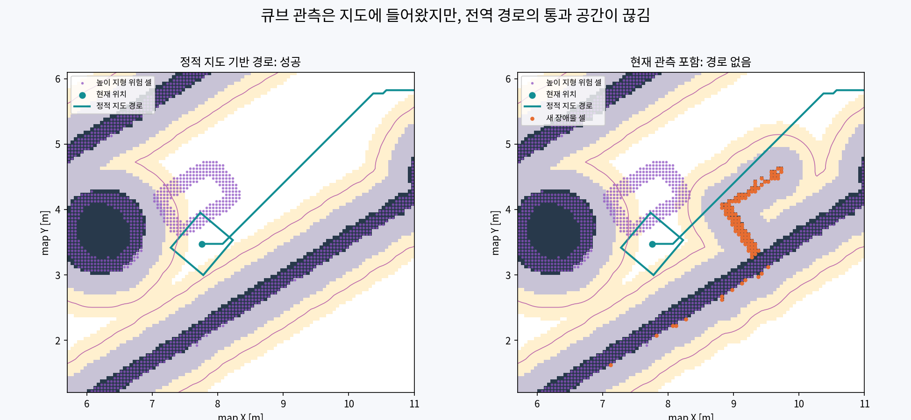
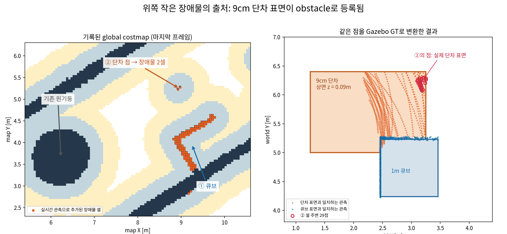

2026-10-27 · ROS_DOMAIN_ID=45 · 별도 진단 자료
새 장애물이 global costmap에 반영된 상태에서 Height planner가 경로를 찾지 못했고, 현재 Behavior Tree가 그 실패를 경로 추종 취소로 전달한다. 따라서 이 경우의 정지는 DWB가 우회 속도를 충분히 탐색하지 못했다는 증거로 해석할 수 없다.
실행 중인 Gazebo SDF에서 BODY의 네 원통 collision 형상을 확인했다. LiDAR 원점은 BODY 기준 (0.101, 0, -0.1169)m이다. 원통의 크기까지 포함한 보수적 거리 상한은 앞쪽 두 개 약 0.129m, 뒤쪽 두 개 약 0.235m다. 모두 현재 최소 허용 거리 0.3m보다 안쪽이므로 해당 형상의 직접 반사점은 거리 필터에서 제외된다.
| 재생 중 기록한 필터 출력 | 결과 |
|---|---|
| 프레임 / 점 수 | 103 / 585,113 |
| 0.70 × 0.65m 정지 영역의 XY 안쪽 점 | 0 |
| 몸체 아래 검사 영역 점 (|x|, |y| ≤ 0.25m, z < 0) | 0 |
| 필터 통과 점의 최소 센서 거리 | 약 0.997m |
Gazebo collision 형상이 costmap에 직접 복사되는 구조가 아니다. 센서에 검출되고 필터를 통과한 관측이 obstacle layer에 들어간다. 단, 이 기록만으로 과거의 잔상이나 다른 보행 자세의 자가 반사, 돌출부에 의한 시야 가림까지 배제하지는 않는다.
현재 BT는 1Hz 재계획 중 실패하면 추종을 중단하고, 1초 대기 후 같은 목표를 최대 30회 재시도한다. 로그의 compute_path_to_pose Aborting handle은 각 경로 계산 액션의 실패다. 전체 NavigateToPose는 재시도 소진 후 종료될 수 있으며, 이번 기록을 시작할 때에는 이미 ABORTED 상태였다.
safe_command_timeout은 이 흐름에서 추종 명령이 더 이상 나오지 않는 결과다. 일시정지 경계에서 관측된 collision_cloud_timeout은 별도 시간 조건이며, 이것만으로 센서 융합 실패를 판단하지 않는다.
설치된 C++ planner core, 실제 런타임 파라미터, 기록된 frozen height/TF/global costmap을 사용했다. 목표는 사용자 로그에 나온 소수 둘째 자리 좌표 (6.19, -9.75)를 사용했다.

왼쪽은 저장 OccupancyGrid에 같은 inflation 설정을 재구성한 진단용 비교 지도다. 오른쪽은 기록된 실제 global costmap이다. 주황색은 정적 벽과 떨어진 새 lethal 셀, 보라색은 frozen height의 지형 위험 셀, 청록색은 왼쪽 비교 지도의 경로다. 오른쪽 청록 경로는 안전한 우회 경로를 뜻하지 않는다.
| 입력과 조건 | 실제 core 결과 |
|---|---|
| 첫 위치, 현재 관측 포함 / 기존 clearance 유지 | grid path not found |
| 같은 위치, 정적 지도 재구성 / 기존 clearance 유지 | 경로 생성 성공 |
| 후속 위치, 현재 관측 포함 / 기존 clearance 유지 | grid endpoint violates terrain clearance |
후속 위치에서는 목표점이 아니라 시작점이 frozen height의 지형 위험 영역에서 약 0.146m 떨어져 있었다. 설정된 0.20m 지형 여유 조건을 위반해 탐색 시작 전에 거절됐다. 현재 costmap의 장애물 여유 조건과 heightmap의 지형 여유 조건은 서로 다른 검사다.
장애물 clearance와 지형 clearance를 모두 끈 진단에서는 경로가 나왔지만, 이는 통과 가능성을 보증하지 않는다. 해당 설정은 실행 중 navigation에 적용하지 않았다.
위쪽 작은 장애물의 점은 현재 월드의 cost_step_A_upper_h09 단차 표면에서 왔다. 마지막 기록된 global costmap에서 중심 약 (8.95, 5.25)m의 새 lethal 셀은 2개다. 반경 0.12m 내 기록 점 29개를 Gazebo GT 자세로 변환하면 모두 단차 표면과 2.05cm 이내로 맞는다. 원시 점군 전체를 새로 수집한 결과가 아니라, 앞서 기록한 필터 출력의 오프라인 출처 분석이다.

이 점의 world 높이는 약 7.3–11.0cm, body 기준 z는 -0.350–-0.240m다. 현재 허용 밴드 -0.35–1.5m를 통과하여 obstacle로 기록된다. 실제 물체가 있는 위치지만, 보행 가능한 낮은 지형을 충돌 장애물로 분류했다는 점이 문제다. inflation_radius 0.7m 때문에 적은 수의 셀도 크게 표시된다. inflation 전체가 같은 치명적 비용을 가지는 것은 아니다.
분석에 사용한 61프레임은 GT와 TF가 대응되는 표본이며, GT 최근접 시간 차이는 최대 10ms다. 단차의 형상은 실행 중인 SDF, 큐브는 Gazebo 모델 조회로 확인했다. 수치 결과 · 분석 코드.
| 기능 | 권장 역할 |
|---|---|
| Localization / Height Mapping | LiDAR 유지 |
| 전방 가까운 동적 장애물 | RGBD를 local costmap 관측으로 추가하고 현재 LiDAR와 비교 |
| 측면·후방 장애물 | 전방 카메라의 시야 밖이므로 LiDAR 관측 유지 |
| Global planning | 현재 월드와 일치하는 frozen height / 정적 지도와 지속 장애물에 대한 전역 재계획 |
카메라도 낮은 단차와 바닥을 관측한다. 센서 교체만으로 지형/몸체 충돌 판정이 해결되지 않는다. 중력 방향을 고려한 몸체 충돌 높이 선별, 자기 형상 배제, 넘을 수 없는 지형의 로컬 제약을 유지해야 한다. 두 관측은 같은 local costmap으로 합칠 수 있으며, 센서 원점 TF와 marking/clearing 범위를 각각 설정한다. Nav2 Humble ObstacleLayer 소스.
현재 /front_camera/points는 발행자가 있지만 구독자는 0명이며, local/global obstacle layer 모두 /legged/obstacles의 LiDAR 관측만 사용 중이다. 아직 RGBD를 costmap에 연결하지 않았다.
별도로 navigation은 sim_site_v1의 예전 height map을 읽고 있다. localization의 cost_wall_main_v2 PCD와 sim_site_v1 PCD 및 2D 지도는 파일 해시가 같지만, height map은 다르다. 센서 변경 전 현재 월드의 단차와 height map 일치를 검증해야 한다. 이 불일치는 위쪽 2셀의 직접 출처와는 별개의 문제다.
기존 navigation, planner, 로봇 모델은 수정하지 않았다. 새 목표나 주행 명령을 보내지 않고 약 12초간 재생해 기록했으며, 이후 Gazebo Pause 복원을 확인했다. 기록된 최종 /cmd_vel 289개는 모두 0이었다.
자가 반사 검사 · 돌출부 거리 계산 · 기록 요약 · Planner 재현 결과 · 런타임 파라미터 · 재생·정지 기록
취소 동작 근거: 현재 navigate.xml, Nav2 Humble PipelineSequence 구현.